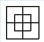
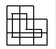
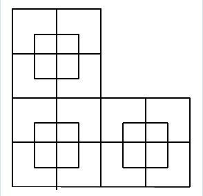
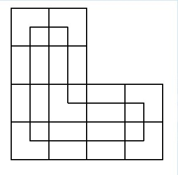
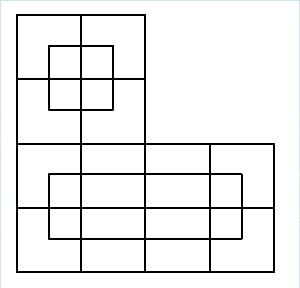
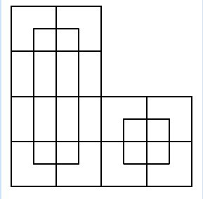

HDU3850. Puzzling Maze
内存限制：2000/1000 MS (Java/Others) 时间限制：125536/65536 K (Java/Others)
题目描述
Little A has a lovely toy dog , and she likes it so much . But bad B envy her happiness . So he robbed her little dog and put it in his partner C's house. C's house is like a big maze,so it's so hard for A to find her toy . So she employed some robots to help her . These robots' travel has some principles .
They're listed as follows:
1.One robot can move horizontal and vertical, and it cannot stay at the start grid and not move.
2.Every robot's path must be a circuit .
3.Every two robots' travel path can not cross at any grid,and any grid in the maze must be stepped once and only once.
4.We don't consider the direction those robots move.
5. You can use any numbers of robots, and there are infinitely many robots.
Only after traveling to every grid can A find her toy dog,she wonders how many ways to do this by using robots ?
They're listed as follows:
1.One robot can move horizontal and vertical, and it cannot stay at the start grid and not move.
2.Every robot's path must be a circuit .
3.Every two robots' travel path can not cross at any grid,and any grid in the maze must be stepped once and only once.
4.We don't consider the direction those robots move.
5. You can use any numbers of robots, and there are infinitely many robots.
Only after traveling to every grid can A find her toy dog,she wonders how many ways to do this by using robots ?
输入格式
The maze is like an "L" ,as show below. There are multiple test case. Each case contains 2 integers,n and m. We guarantee that m>=n,m<=10^9,1<=n<=7.

输出格式
One integer,the ways to do this . The answer should module 1000000007. Use the format in the sample.
样例
样例输入
2 2
2 3
2 4样例输出
Case 1: 1
Case 2: 1
Case 3: 4
HintAnswers to the sample input are shown below .
     